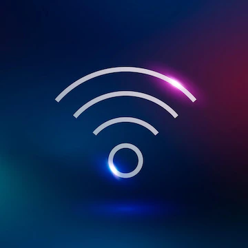
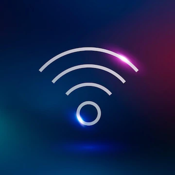

Sociální sítě
Sociální sítě se jsou novým komunikačním kanálem.Pomocí sociálních sítí se prostřednictvím internetu
sdružují lidé, kteří by se jinak fyzicky nemohli setkat.
V současné době prožívají sociální
sítě rychlý rozvoj, který je urychlován každým rokem.
Účel sociálních sítí se různí, některé slouží ke sdílení informací a k zábavě,
- Discord
- YouTube
- Snapchat
- TikTok
jiné pomáhají hledat práci. Známé sociální sítě jsou například:

Způsoby připojení k internetu
Mezinárodní dálkové spoje dosahují v internetu velmi vysokých přenosových rychlostíSamotné připojení uživatelů je realizováno různými technologiemi. Uživatelé se někdy
spojují do skupin, aby ušetřili náklady nebo naopak dosáhli na dražší, ale rychlejší připojení.
V současnosti existuje několik možností pro připojení počítače k internetu:
- telefonní linka
- dříve se používalo vytáčené připojení
- kabelová přípojka
- bezdrátová datová síť
- satelitní síť
- mobilní telefonní síť
- Wi-Fi
- elektrická rozvodná síť
- agregace (tj. kolik uživatelů sdílí jednu linku)
- doba odezvy
- rychlost připojení poslední míle
- technologie použitá pro připojení